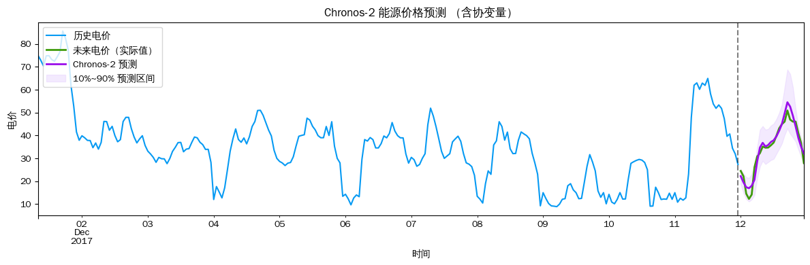
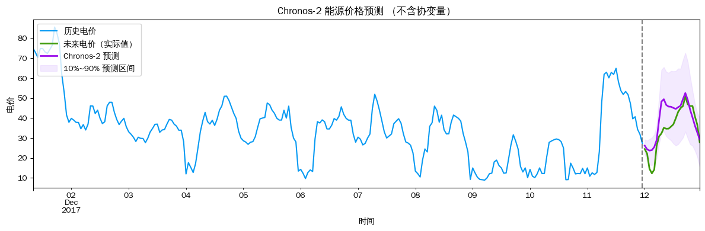

Chronos-2 时序预测——能源价格（含协变量）
使用 Amazon Chronos-2 预测德国未来 24 小时电价，以 Ampirion 负荷预测 和 光伏+风电出力预测 为已知未来协变量，并与不含协变量的基线对比。
数据：AutoGluon electricity_price（训练集 51936 行，2012-01-09 ~ 2017-12-11，小时级）
预测目标：2017-12-12 00:00 ~ 23:00（24 小时）
import os
os.environ["CUDA_VISIBLE_DEVICES"] = "0"
import pandas as pd
import numpy as np
import matplotlib.pyplot as plt
from chronos import BaseChronosPipeline, Chronos2Pipeline
plt.rcParams['font.sans-serif'] = ['WenQuanYi Zen Hei', 'WenQuanYi Micro Hei']
plt.rcParams['axes.unicode_minus'] = False
pipeline: Chronos2Pipeline = BaseChronosPipeline.from_pretrained("amazon/chronos-2", device_map="cpu")TARGET = 'target'
ID_COL = 'id'
TS_COL = 'timestamp'
TIMESERIES_ID = 'DE'
PREDICTION_LENGTH = 24
SHOW_HISTORY = 256
energy_context_df = pd.read_parquet(
'https://autogluon.s3.amazonaws.com/datasets/timeseries/electricity_price/train.parquet',
engine='fastparquet'
)
energy_context_df[TS_COL] = pd.to_datetime(energy_context_df[TS_COL])
energy_test_df = pd.read_parquet(
'https://autogluon.s3.amazonaws.com/datasets/timeseries/electricity_price/test.parquet',
engine='fastparquet'
)
energy_test_df[TS_COL] = pd.to_datetime(energy_test_df[TS_COL])
# 从测试集移除目标列，仅保留协变量（Chronos-2 通过 future_df 接收已知未来协变量）
energy_future_df = energy_test_df.drop(columns=TARGET)
print('训练数据:', energy_context_df.shape, '| 列:', list(energy_context_df.columns))
print(f'时间范围: {energy_context_df[TS_COL].min().date()} ~ {energy_context_df[TS_COL].max().date()}')
print('预测目标日:', energy_test_df[TS_COL].min().date())
energy_context_df.head(3)训练数据: (51936, 5) | 列: ['id', 'timestamp', 'target', 'Ampirion Load Forecast', 'PV+Wind Forecast']
时间范围: 2012-01-09 ~ 2017-12-11
预测目标日: 2017-12-12| id | timestamp | target | Ampirion Load Forecast | PV+Wind Forecast | |
|---|---|---|---|---|---|
| 0 | DE | 2012-01-09 00:00:00 | 34.970001 | 16382.0 | 3569.527588 |
| 1 | DE | 2012-01-09 01:00:00 | 33.430000 | 15410.5 | 3315.274902 |
| 2 | DE | 2012-01-09 02:00:00 | 32.740002 | 15595.0 | 3107.307617 |
# 使用协变量预测未来电价
energy_pred_df = pipeline.predict_df(
energy_context_df,
future_df=energy_future_df,
prediction_length=PREDICTION_LENGTH,
quantile_levels=[0.1, 0.5, 0.9],
id_column=ID_COL,
timestamp_column=TS_COL,
target=TARGET,
)
print('预测结果维度:', energy_pred_df.shape)
energy_pred_df.head()预测结果维度: (24, 7)| id | timestamp | target_name | predictions | 0.1 | 0.5 | 0.9 | |
|---|---|---|---|---|---|---|---|
| 0 | DE | 2017-12-12 00:00:00 | target | 22.242920 | 18.673723 | 22.242920 | 25.403454 |
| 1 | DE | 2017-12-12 01:00:00 | target | 19.525620 | 14.904280 | 19.525620 | 23.316599 |
| 2 | DE | 2017-12-12 02:00:00 | target | 17.415373 | 12.209057 | 17.415373 | 21.776979 |
| 3 | DE | 2017-12-12 03:00:00 | target | 16.979267 | 11.165129 | 16.979267 | 21.435225 |
| 4 | DE | 2017-12-12 04:00:00 | target | 18.058655 | 12.096771 | 18.058655 | 23.166647 |
def plot_chronos_energy(context_df, pred_df, test_df, timeseries_id, title_suffix=''):
ts_ctx = context_df.query(f"{ID_COL} == @timeseries_id").set_index(TS_COL)[TARGET]
ts_pred = pred_df.query(f"{ID_COL} == @timeseries_id and target_name == @TARGET").set_index(TS_COL)[['0.1', 'predictions', '0.9']]
ts_gt = test_df.query(f"{ID_COL} == @timeseries_id").set_index(TS_COL)[TARGET]
start_idx = max(0, len(ts_ctx) - SHOW_HISTORY)
plot_from = ts_ctx.index[start_idx]
ts_ctx = ts_ctx[ts_ctx.index >= plot_from]
fig, ax = plt.subplots(figsize=(12, 4))
ts_ctx.plot(ax=ax, label='历史电价', color='xkcd:azure')
ts_gt.plot(ax=ax, label='未来电价（实际值）', color='xkcd:grass green', linewidth=2)
ts_pred['predictions'].plot(ax=ax, label='Chronos-2 预测', color='xkcd:violet', linewidth=2)
ax.fill_between(ts_pred.index, ts_pred['0.1'], ts_pred['0.9'],
alpha=0.35, label='10%~90% 预测区间', color='xkcd:light lavender')
ax.axvline(x=context_df.query(f"{ID_COL} == @timeseries_id")[TS_COL].max(),
color='black', linestyle='--', alpha=0.5)
ax.set_title(f'Chronos-2 能源价格预测 {title_suffix}')
ax.set_xlabel('时间')
ax.set_ylabel('电价')
ax.legend(loc='upper left')
plt.tight_layout()
plt.show()
plot_chronos_energy(energy_context_df, energy_pred_df, energy_test_df,
TIMESERIES_ID, title_suffix='（含协变量）')
# 对比：不含协变量的基线
energy_pred_no_cov = pipeline.predict_df(
energy_context_df[[ID_COL, TS_COL, TARGET]],
future_df=None,
prediction_length=PREDICTION_LENGTH,
quantile_levels=[0.1, 0.5, 0.9],
id_column=ID_COL,
timestamp_column=TS_COL,
target=TARGET,
)
plot_chronos_energy(energy_context_df, energy_pred_no_cov, energy_test_df,
TIMESERIES_ID, title_suffix='（不含协变量）')
# 误差指标对比
gt = (energy_test_df.query(f"{ID_COL} == @TIMESERIES_ID")
.sort_values(TS_COL)[TARGET].values)
def calc_metrics(pred_df, timeseries_id, label):
y_pred = pred_df.query(f"{ID_COL} == @timeseries_id and target_name == @TARGET").sort_values(TS_COL)['predictions'].values
mae = np.mean(np.abs(gt - y_pred))
rmse = np.sqrt(np.mean((gt - y_pred) ** 2))
mape = np.mean(np.abs((gt - y_pred) / gt)) * 100
print(f'{label} MAE={mae:.3f} RMSE={rmse:.3f} MAPE={mape:.2f}%')
print('─' * 55)
calc_metrics(energy_pred_df, TIMESERIES_ID, 'Chronos-2 含协变量: ')
calc_metrics(energy_pred_no_cov, TIMESERIES_ID, 'Chronos-2 不含协变量:')
print('─' * 55)───────────────────────────────────────────────────────
Chronos-2 含协变量: MAE=2.457 RMSE=2.886 MAPE=9.26%
Chronos-2 不含协变量: MAE=6.314 RMSE=7.759 MAPE=24.01%
───────────────────────────────────────────────────────